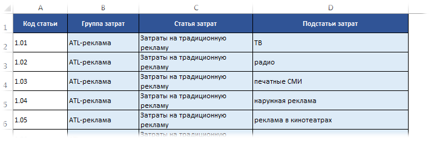
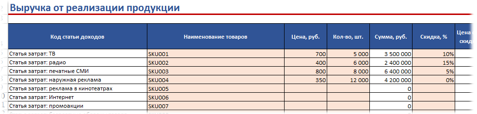

Массовая замена слов (54,5 KiB, 3 026 скачиваний)
Массовая замена слов (54,5 KiB, 3 026 скачиваний)Массовая замена слов
Предположим, что нам необходимо заменить все "ул." на листе на "улица ". Или русское слово "дом" на английское "house". Или еще интереснее: все английские буквы на русские. Например, английская "а" должна быть заменена на русскую "a", английская "c" на русскую "с", английская "H" на русскую "Н" и т.д. А такое тоже нередко бывает и доставляет проблемы. Ведь если в одной таблице будут русские буквы, а в другой английские - то применение большинства встроенных функций поиска(та же ВПР) просто не найдут соответствия.
Если подобную замену надо сделать для одного сочетания, то все просто: жмем Ctrl+H и указываем что заменить и на что. Но если таких замен надо сделать 20? Или 120? Это надо будет 120 раз нажать и ввести что заменять и на что. А если это надо сделать еще и не в одном документе - то...Думаю сами справитесь с умножением количества замен на количество файлов, в которых это надо сделать. И вроде бы простая операция превращается в ваш личный ад на работе.
Недавно на форуме участнику потребовалось автоматизировать именно такую штуку. Т.к. код несложный - решил написать и чуть дополнив выложить для всех кому код может потребоваться:
Option Explicit Sub Replace_Mass() Dim s As String Dim lCol As Long Dim avArr, lr As Long Dim lLastR As Long Dim lToFindCol As Long, lToReplaceCol As Long, lLookAt As Long 'запрашиваем направление перевода - с русского на англ. или наоборот lCol = Val(InputBox("Укажите направление перевода:" & vbNewLine & _ " 1 - ru-en" & vbNewLine & _ " 2 - en-ru", "Запрос", 1)) If lCol = 0 Then Exit Sub 'запрашиваем по части ячейки искать или по всему тексту 'по умолчанию - по части lLookAt = Val(InputBox("Искать соответствие по части ячейки или по всему тексту:" & vbNewLine & _ " 1 - по всему тексту" & vbNewLine & _ " 2 - по части ячейки", "Запрос", 2)) If lLookAt = 0 Then Exit Sub Select Case lCol Case 1 lToFindCol = 1 lToReplaceCol = 2 Case 2 lToFindCol = 2 lToReplaceCol = 1 End Select Application.ScreenUpdating = 0 'Получаем с листа Соответствия значения, которые надо заменить в выделенном диапазоне With ThisWorkbook.Sheets("Соответствия") lLastR = .Cells(.Rows.Count, 1).End(xlUp).Row avArr = .Cells(1, 1).Resize(lLastR, 2) End With 'заменяем For lr = 1 To UBound(avArr, 1) s = avArr(lr, lToFindCol) If Len(s) Then 'если значение для замены не пустое Selection.Replace s, avArr(lr, lToReplaceCol), lLookAt End If Next lr Application.ScreenUpdating = 1 End Sub
Как это работает. В книге есть специальный лист с именем "Соответствия". На нем в столбце А записаны слова, которые необходимо заменить, а в столбце В - на что эти слова заменить. Если в столбце А пусто - то замена не будет произведена. Если в столбце В пусто - то значение из столбца А будет просто удалено.
Замены производятся исключительно в выделенных на листе ячейках. Ячейки могут быть несмежными.
Итак, необходимо сделать много замен. Скачиваете файл:
Массовая замена слов (54,5 KiB, 3 026 скачиваний)
Примечание: Я сделал файл как переводчик. Т.е. в первом столбце русские слова, во втором английские. Но в столбцах может быть что угодно - хоть слова, хоть символы, хоть числа.
На лист "Соответствия" записываете в столбец А - что заменять, в столбец В - на что заменять. Переходите на лист книги, в котором необходимо произвести замену. Выделяете ячейки, значения в которых надо найти и заменить. После чего жмете Alt+F8 и выбираете макрос "Tips_Macro_ReplaceMASS.xls!Replace_Mass"(или просто "Replace_Mass", если код в той же книге, что и ячейки для поиска и замены).
Первым появится окно с запросом направления перевода. По умолчанию 1(ru-en). Т.е. будет браться слово из столбца А и заменяться словом из столбца В. Но если указать 2 - то будет браться слово из столбца В и заменяться словом из столбца А. Т.е. аналог переводчика - с рус. на англ. и наоборот. Либо из А в В, либо из В в А.
Вторым появится запрос на метод просмотра данных:
И еще один практический пример чуть модифицированного кода. Предположим, имеется таблица выручки по реализации продукции:
Как видно, здесь присутствую только номера статей, но нет их расшифровки. Зато расшифровка есть в отдельном листе "Справочник":

Как видно, в справочнике присутствуют нужные номера статей и можно было бы применить ту же ВПР(VLOOKUP) для замен. Если бы не одно но: в таблице по реализации помимо номеров статьей есть еще лишний текст "Статья затрат:". Конечно, можно сначала заменить этот текст, потом в отдельном столбце применить ВПР, заменить формулу значениями и вернуть в исходный столбец. Если при этом надо еще оставить текст "Статья затрат:", то надо будет сделать еще доп.манипуляции либо при составлении формулы, либо после. В любом случае - слишком много лишних телодвижений. А значит бОльшие времязатраты.
Приложенный ниже файл поможет сделать это в разы быстрее:
Скачать файл с примером и кодом:
Массовая замена слов - статьи.xls (91,5 KiB, 350 скачиваний)
и в итоге за пару секунд получим следующий результат:

Достаточно выделить столбец со статьями на листе с реализацией и запустить код(либо нажатием кнопки заменить значения, либо нажав Alt+F8 и выбрав из списка макросов макрос Replace_Mass).
После нажатия на кнопку будут запрошены следующие параметры:
Если все указано корректно, то на листе будут произведены все необходимые замены.
Возможные ошибки, которые предусмотрены кодом и о которых будет сообщено соответствующим сообщением(код прервется, замены не будут произведены):
Особое внимание хочу уделить случаю, когда выбирается замена по части ячейки. В этом случае лучше список на листе Справочник отсортировать по длине текста по тому столбцу, в котором будут значения для поиска. Зачем это надо: т.к. значение по части ячейки будет заменять не полное соответствие, то есть вероятность неверных замен. Например, есть текст "Статья затрат: 1.011". В то же время на листе Справочник есть статьи "1.01" и "1.011". Т.к. "1.01" идет раньше в большинстве случаев, то текст будет заменен некорректно: "Статья затрат: ТВ1".
Чтобы получить длину строки текста можно использовать функцию ДЛСТР(LEN):
=ДЛСТР(A2)
=LEN(A2)
В отличие от кода, приведенного в начале статьи, код во втором файле позволяет производить замену не только на основании двух столбцов, но и ориентируясь на таблицу данных, как видно из реализации. Можно выбрать любой столбец Справочника для поиска значений и так же любой для замены, что предоставляет большую гибкость по замене значений.